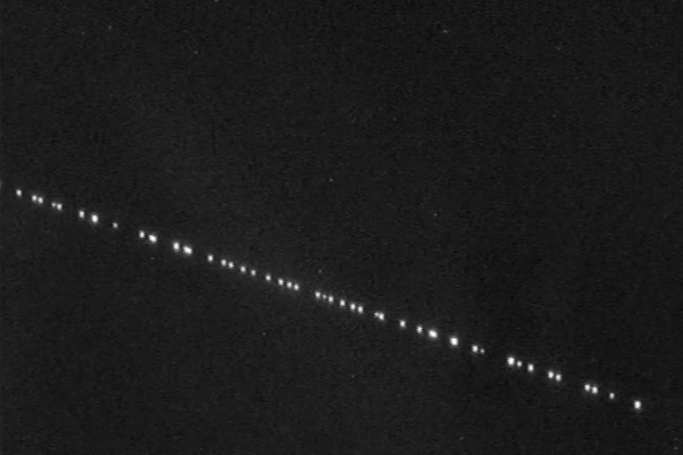

What is a satellite ?
- A celestial body orbiting the earth or another planet.
- An artificial body placed in orbit round the earth or moon or another planet in order to collect information or for communication.
How does it works ?
Firstly, a satellite doesn't fly. It just fall constantly around the Earth. It's easy to explain : if you throw a stone, it will follow a parabola which lead to the ground, or if we want to be specific, to the center of Earth. When we reach a specific speed defined by the distance satellite/earth (cf Kepler laws), the satellite will follow the curve of Earth. To avoid the satellite to fall while losing speed due to friction with air particles, we need it to be over the atmosphere, where there is no friction force. At this altitude, there is no need to use any energy to maintain his movement. For example, the ISS which is close to earth, need every month to use some air to go up and keep a good distance and speed due to friction.
Secondly, I will explain differents orbits and how do they work
Low Earth orbit (LEO) : Geocentric orbits ranging in altitude from 180 km – 2,000 km (1,200
mi).
Medium Earth orbit (MEO) : Geocentric orbits ranging in altitude from 2,000 km (1,200 mi) –
35,786
km (22,236 mi). Also known as an intermediate circular orbit.
Geostationnary Earth Orbit (GEO) : Geocentric circular orbit with an altitude of 35,786
kilometres
(22,236 mi).
The period of the orbit equals one sidereal day, coinciding with the rotation period of the
Earth.
The speed is 3,075 metres per second (10,090 ft/s).
This orbit is used by communication & TV satellites.
High Earth orbit (HEO): Geocentric orbits above the altitude of geosynchronous orbit 35,786 km
(22,236 mi).

Project Starlink
Explanation
The project Starlink's purpose is to grant access to Internet for everyone, everywhere on Earth. Nowadays, there is 5% of the population who don't have any internet access
How ? the project is about to launch 42 000 satellites to create a constellation of satellites.
In space, the solar-powered, 500-pound satellites communicate with one another through both optical
and
radio links; the entire network will then be connected with user terminals on the ground that can be
installed basically anywhere with a view of the sky. With a large enough array of satellites passing
overhead, internet service should be continually available, unlike the delays in connectivity that
are common with current Iridium satellites and other networks.
As well, SpaceX says each satellite will be “capable of tracking on-orbit debris and autonomously avoiding collision,” and that 95 percent of the satellites’ components will quickly disintegrate in Earth’s atmosphere during de-orbit at the ends of their lifetimes.
In april 2018, there was 1 600 satellites over the world. Two years after, this amount just double due to this project.
Controversy & problems
Firstly, despite Musk’s initial assurances that the satellites will be barely noticeable, the train of spacecraft has been captured marching across skies around the globe, and some online tracking services can even calculate when and where someone can spot them sailing by overhead.
Astronomers have also raised concerns about the constellations’ effect on ground-based astronomy and how the minifridge-size satellites will add to an already jammed orbital environment.
Like the Iridium satellites that preceded them, Starlink satellites can sometimes “flare” if their solar arrays are angled just right to throw a burst of reflected sunlight toward Earth, briefly boosting their apparent brightness to potentially rival Venus or Jupiter.
And even these revised estimates, which are based on the satellite’s final orbital altitudes and inclinations, suggest that they’ll be visible to unaided eyes from very dark sites.
However, despite his initial insistence that Starlink’s components will be invisible and unproblematic for astronomy, Musk has said he’s directed his team to think about ways of reducing Starlink’s reflectivity, or albedo.
What about legal approval ?
I will begin with the contextual background. If there is a problem with Starlink, it's not Musk's fault, it's on the country which allow the launch of these satellites to give a report on it
SpaceX has already received approval from the International Telecommunications Union and the U.S. Federal Communications Commission to launch a total of 11,943 satellites. And assuming the Federal Aviation Administration continues to grant launch licenses for rockets with Starlink satellites on board, there’s no regulatory machinery in place to prevent the company from seeing its strategy through to completion.
To be fair, SpaceX is not the only company with plans to assemble clouds of space-based internet satellites. Among those, Amazon is planning its 3,000 satellite-strong Project Kuiper, and OneWeb (which has already launched six satellites) intends to eventually send as many as 2,000 spacecraft into orbit.
Militarisation of space
The militarisation of space involves the placement and development of weaponry and military technology in outer space. The early exploration of space in the mid-20th century had, in part, a military motivation, as the United States and the Soviet Union used it as an opportunity to demonstrate ballistic-missile technology and other technologies having the potential for military application.
By the end of the 1960s, both countries regularly deployed satellites. Reconnaissance satellites were used by militaries to take accurate pictures of their rivals' military installations. As time passed the resolution and accuracy of orbital reconnaissance alarmed both sides of the iron curtain. Both the United States and the Soviet Union began to develop anti-satellite weapons to blind or destroy each other's satellites. Directed-energy weapons, kamikaze-style satellites, as well as orbital nuclear explosives were researched with varying levels of success. Spy satellites were, and continue to be, used to monitor the dismantling of military assets in accordance with arms control treaties signed between the two superpowers. To use spy satellites in such a manner is often referred to in treaties as "national technical means of verification"
The superpowers developed ballistic missiles to enable them to use nuclear weaponry across great distances. As rocket science developed, the range of missiles increased and intercontinental ballistic missiles (ICBM) were created, which could strike virtually any target on Earth in a timeframe measured in minutes rather than hours or days. To cover large distances ballistic missiles are usually launched into sub-orbital spaceflight.
The year after the first satellite was launch, URSS tried to destroy one satellite with an earth-space missile, they missed but they were satisfied about this launch
Nowadays, 4 country have already destroyed a satellite like that : China, USA, Russia & India
However, destroying satellites with missile cause a big problem : there is many debris which stay in space, which can cause many problems to others satellites, or more recently the ISS's astronauts must cancel an outside mission because of debris caused by the destruction of a russian satellite.
Spatial debris & ecology
Since 1957, the begining of space age, tons of launchers, vehicles and instuments has been sent
into space. We had no relative informations about what to do with this objects at the end of
their lives. We decided to ignore it and let them derive into space.
Their number keep increasing, which cause many explosions and collisions, creating bilions of
spatial debris.

For these reasons, some law appeared to ensure that we will reduce space debris. Formerly, we did
use all the fuel and when there was no fuel left, we just left it where it was.
These days, we need to keep enough fuel to ensure a satellite will be ejected from his orbit.
For a geostationary satellite, they eject it far away in the space. For a satellite in
geocentric orbit, it will fall on earth and get burned by the atmosphere.
There is a list of international norms & directives to follow :
- Build launchers and space vehicle to avoid them to lose parts (when launch and during his operation)
- Prevent explosion while liberating energy, to be sure a vehicle becomes passiv
- When a mission is over, use the last fuel to quit orbits
- Avoid collisions in space while chosing conscientiously their orbits and performing avoiding collisions process
Actually, there is approximatively 9 600 tons of debris, 36 500 are more than 10cm, 1 million are between 10cm and 1cm, and 330 millions between 1cm and 1 mm
To try to reduce this amount, some enterprise are working on a system with hook and net to catch
debris and bring back on earth.
They also created some repair satellites, which can go near a satellite and repair it if necessary.